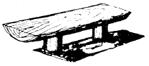
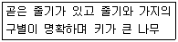
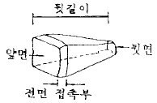
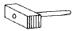
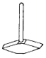
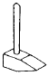
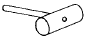
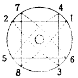

조경기능사 (2004-02-01 기출문제)
1과목: 조경일반
1. 정형식 조경 중에서 르네상스 시대의 프랑스 정원이 속하는 형식은 무엇인가?
- 평면 기하학식
- 노단식
- 중정식
- 전원 풍경식
(정답률: 85%)

2. 중국식 정원에 대한 기술 중 가장 옳은 것은?
- 풍경식으로 대비에 중점을 두었다.
- 풍경식으로 조화에 중점을 두었다.
- 선사상과 묵화의 영향을 많이 입었다.
- 건축식 조경수법을 강조한 풍경식이다.
(정답률: 86%)
3. 정원 양식의 발생요인 중 자연환경 요인이 아닌 것은?
- 기후
- 지형
- 식물
- 종교
(정답률: 94%)
4. 다음 중 조경 계획의 수행 과정의 단계가 옳은 것은?
- 목표설정 - 자료분석 및 종합 - 기본계획 - 실시설계 - 기본설계
- 자료분석 및 종합 - 목표설정 - 기본계획 - 기본설계 - 실시설계
- 목표설정 - 자료분석 및 종합 - 기본계획 - 기본설계 - 실시설계
- 목표설정 - 자료분석 및 종합 - 기본설계 - 기본계획 - 실시설계
(정답률: 80%)
5. 테라스(terrace)를 쌓아 만들어진 정원은?
- 일본 정원
- 프랑스 정원
- 이탈리아 정원
- 영국 정원
(정답률: 81%)
6. 회교문화의 영향을 입은 독특한 정원 양식을 보이는 것은?
- 이탈리아 정원
- 프랑스 정원
- 영국 정원
- 스페인(에스파니아) 정원
(정답률: 89%)
7. 다음 중 일본에서 가장 늦게 발달한 정원 양식은?
- 회유임천식
- 다정양식
- 평정고산수식
- 축산고산수식
(정답률: 83%)
8. 조선시대 후원의 장식용이 아닌 것은?
- 괴석
- 세심석
- 굴뚝
- 석가산
(정답률: 73%)
9. 다음과 같은 그림을 무엇이라고 부르는가?

- 평면도
- 입면도
- 조감도
- 상세도
(정답률: 87%)
10. 대비가 아닌 것은?
- 푸른잎과 붉은잎
- 직선과 곡선
- 완만한 시내와 포플러나무
- 벚꽃을 배경으로 한 살구꽃
(정답률: 69%)
11. 울창한 숲을 배경으로 한 푸른 연못은 어떠한 감정을 느끼게 하는가?
- 차분하고 존엄한 감을 느끼게 한다.
- 생동적이고 환희스러운 감을 느끼게 한다.
- 침울하고 비관적인 감을 느끼게 한다.
- 율동적이며 흥미로운 감흥을 느끼게 한다.
(정답률: 81%)
12. 정원수의 아름다움의 3가지 요소(삼재미)에 해당되지 않는 것은?
- 색채미
- 형자미(형태미)
- 내용미
- 식재미
(정답률: 66%)
13. 주택 정원을 설계할 때 일반적으로 고려할 사항이 아닌 것은?
- 무엇보다도 안전 위주로 설계해야 한다.
- 시공과 관리하기가 쉽도록 설계해야 한다.
- 특수하고 귀중한 재료만을 선정하여 설계해야 한다.
- 재료는 구하기 쉬운 재료를 넣어 설계한다.
(정답률: 94%)
14. 조경을 프로젝트의 대상지별로 구분할 때 문화재 주변 공간에 해당되지 않는 곳은 어느 것인가?
- 궁궐
- 사찰
- 유원지
- 왕릉
(정답률: 85%)
15. 일반적으로 옥상 정원 설계시 고려할 사항으로 가장 관계가 적은 것은?
- 토양층 깊이
- 방수 문제
- 잘 자라는 수목 선정
- 하중 문제
(정답률: 83%)
2과목: 조경재료
16. 조경수목의 선정시에 꽃의 향기가 주가 되는 나무가 아닌 것은?
- 함박꽃나무
- 서향
- 자귀나무
- 목서
(정답률: 72%)
17. 다음 설명에 해당하는 나무를 무엇이라 하는가?

- 교목
- 관목
- 덩굴성나무(만경목)
- 지피식물
(정답률: 91%)
18. 알뿌리로 짝지어진 초화류는?
- 패랭이꽃, 칸나
- 금붕어꽃, 라넌큘러스
- 튜울립, 데이지
- 다알리아, 수선화
(정답률: 76%)
19. 석가산을 만들고자 한다. 적당한 돌은?
- 잡석
- 산석
- 호박돌
- 자갈
(정답률: 86%)
20. 용광로에서 나오는 광석 찌꺼기를 석고와 함께 시멘트에 섞은 것으로서 하수도 공사에 쓰이는 것은?
- 실리카시멘트
- 고로시멘트
- 중용열 포오틀랜드시멘트
- 조강 포오틀랜드시멘트
(정답률: 79%)
21. 배수가 잘 안되는 저습지대에 식재를 하려 한다. 적합하지 않은 나무는?
- 메타세콰이어
- 매자나무
- 낙우송
- 버드나무
(정답률: 52%)
22. 이식하기 가장 어려운 나무는?
- 가이즈까 향나무
- 쥐똥나무
- 목련
- 명자나무
(정답률: 73%)
23. 다음 중 붉은 색의 단풍이 드는 수목들로 구성된 것은?
- 낙우송,느티나무,백합나무
- 칠엽수,참느릅나무,졸참나무
- 감나무,화살나무,붉나무
- 이깔나무,메타세콰이어,은행나무
(정답률: 89%)
24. 가로수로서 갖추어야 할 조건을 기술한 것 중 옳지 않은 것은?
- 강한 바람에도 잘 견딜 수 있는 것
- 사철 푸른 상록수 일 것
- 각종 공해에 잘 견디는 것
- 여름철 그늘을 만들고 병해충에 잘 견디는 것
(정답률: 89%)
25. 개화기가 가장 빠른 것 끼리 나열된 것은?
- 풍년화, 꽃사과, 황매화
- 조팝나무, 미선나무, 배롱나무
- 진달래, 낙상홍, 수수꽃다리
- 생강나무, 산수유, 개나리
(정답률: 86%)
26. 정원수목으로 적합치 않다고 생각되는 것은?
- 잎이 아름다운
- 값이 비싸고 희귀한
- 이식과 재배가 쉬운
- 꽃과 열매가 아름다운
(정답률: 94%)
27. 다음 그림과 같은 돌을 무엇이라 부르는가?

- 견치돌
- 경관석
- 호박돌
- 사괴석
(정답률: 90%)
28. 다음 중 열가소성 수지는 어느 것인가?
- 페놀수지
- 멜라민수지
- 폴리에틸렌수지
- 요소수지
(정답률: 74%)
29. 거푸집판의 콘크리이트 접촉면에 바르는 박리제로 적당한 것은?
- 모빌유
- 석유
- 폐유
- 타르
(정답률: 63%)
30. 그림 중 암석에서 떼어 낸 석재를 가공하는데나 잔다듬질에 쓰이는 도드락망치인 것은?




(정답률: 76%)
31. 점토 제품 중 돌을 빻아 빚은 것을 1300℃ 정도의 온도로 구웠기 때문에 거의 물을 빨아들이지 않으며, 마찰이나 충격에 견디는 힘이 강한 것은?
- 벽돌 제품
- 토관 제품
- 타일 제품
- 도자기 제품
(정답률: 74%)
32. 시멘트의 저장법으로 가장 옳은 것은?
- 방습 창고에 통풍이 잘 되도록 한다
- 땅바닥에서 10㎝이상 떨어진 마루에서 쌓는다
- 13포대 이상 쌓지 않는다
- 5개월 이상 저장하지 않는다
(정답률: 76%)
33. 원목의 4면을 따낸 목재를 무엇이라 부르는가?
- 통나무
- 가공재
- 조각재
- 판재
(정답률: 54%)
34. 분수에 관하여 바르게 설명 한 것은?
- 단일 구경 노즐은 조명 효과가 크다
- 살수식 노즐은 명확하고 힘찬 물줄기를 만드는 장점이 있다
- 공기 흡인식 제트 노즐은 공기와 물이 섞여 있는 모습으로 보여 시각적 효과가 매우 크다
- 분수는 순환 펌프가 필요하지 않다
(정답률: 63%)
35. 척박한 토양에 가장 잘 견디는 수목은?
- 소나무
- 삼나무
- 주목
- 배롱나무
(정답률: 73%)
3과목: 조경 시공 및 관리
36. 다음 중 정형식 배식 유형은?
- 부등변 삼각형 식재
- 임의 식재
- 군식
- 교호 식재
(정답률: 73%)
37. 디딤돌로 이용할 돌의 두께로 가장 적당한 것은?
- 1 - 5cm
- 10 - 20cm
- 25 - 35cm
- 35 - 45cm
(정답률: 63%)
38. 벽돌 표준형의 크기는 190mm × 90mm × 57mm 이다. 벽돌 줄눈의 두께를 10mm로 할 때, 표준형 벽돌벽 1.5B의 두께는 얼마인가?
- 170mm
- 270mm
- 290mm
- 330mm
(정답률: 81%)
39. 소나무의 순자르기 방법이 잘못 설명된 것은?
- 수세가 좋거나 어린나무는 다소 빨리 실시하고 노목 이나 약해 보이는 나무는 5 - 7일 늦게한다.
- 손으로 순을 따 주는 것이 좋다.
- 5 - 6월경에 새순이 5 - 10cm 길이로 자랐을 때 실시한다.
- 자라는 힘이 지나치다고 생각될 때에는 1/3 - 1/2 정도 남겨두고 끝부분을 따 버린다.
(정답률: 78%)
40. 콘크리이트 공사 중 콘크리이트 표면에 곰보가 생기거나 콘크리이트 내부에 공극이 생기지 않도록 하는 방법은?
- 콘크리이트 다지기
- 콘크리이트 비비기
- 콘크리이트 붓기
- 콘크리이트 양생
(정답률: 83%)
41. 다음 중 잎에 등황색의 반점이 생기고 반점으로부터 붉은 가루가 발생하는 병으로 한국잔디의 대표적인 것은?
- 붉은 녹병
- 푸사륨 팻치(Fusarium patch)
- 황화현상
- 달라스폿(doller spot)
(정답률: 91%)
42. 장미의 한가지에 많은 봉우리가 있을 때 솎아 낸다든지, 열매를 따버리는 작업의 목적은?
- 생장조장을 돕는 가지 다듬기
- 세력을 갱신하는 가지 다듬기
- 착화 촉진을 위한 가지 다듬기
- 생장을 억제하는 가지 다듬기
(정답률: 69%)
43. 정원수 전정의 목적에 합당하지 않는 것은?
- 지나치게 자라는 현상을 억제하여 나무의 자라는 힘을 고르게 한다.
- 움이 트는 것을 억제하여 나무의 생김새를 고르게 한다.
- 강한 바람에 의해 나무가 쓰러지거나 가지가 손상 되는 것을 막는다.
- 채광, 통풍을 도움으로서 병.벌레의 피해를 미연에 방지한다.
(정답률: 61%)
44. 난지형 잔디밭에 뗏밥을 넣어주는 적기는?
- 3 - 4월
- 6 - 8월
- 9 - 10월
- 11 - 1월
(정답률: 82%)
45. 자연석 공사시 돌과 돌사이에 붙여 심는 것으로 적합하지 않는 것은?
- 회양목
- 철쭉
- 맥문동
- 향나무
(정답률: 80%)
46. 솔잎혹파리에는 먹좀벌을 방사시키면 방제효과가 있다. 이러한 방제법에 해당하는 것은?
- 가꾸기에 의한 방제법
- 생물적 방제법
- 물리적 방제법
- 화학적 방제법
(정답률: 87%)
47. 지주목 설치 요령 중 적합치 않은 것은?
- 지주목을 묶어야 할 나무 줄기 부위는 타이어튜브나 마대 혹은 새끼를 감는다.
- 지주목의 아래는 뾰족하게 깎아서 땅속으로 30-50cm 깊이로 박는다.
- 지상부의 지주는 페인트 칠을 하는 것이 좋다.
- 통행인이 많은 곳은 삼발이형, 적은 곳은 사각지주ㆍ삼각지주가 많이 설치된다.
(정답률: 67%)
48. 그림과 같은 뿌리분 새끼감기의 방법은?

- 4줄 한번 걸기
- 4줄 두번 걸기
- 4줄 세번 걸기
- 3줄 두번 걸기
(정답률: 76%)
49. 굵은 가지를 전정하였을 때 전정부위에 반드시 도포제를 발라주어야 하는 수종은?
- 잣나무
- 메타세콰이어
- 소나무
- 벚나무
(정답률: 75%)
50. 한중(寒中) 콘크리트는 기온이 얼마일 때 사용하는가?
- -1℃ 이하
- 4℃ 이하
- 25℃ 이하
- 30℃ 이하
(정답률: 81%)
51. 원로의 기울기가 몇도 이상일 때 일반적으로 계단을 설치하는가?(오류 신고가 접수된 문제입니다. 반드시 정답과 해설을 확인하시기 바랍니다.)
- 3°
- 5°
- 10°
- 15°
(정답률: 76%)
52. 비탈면을 보호하기 위한 방법이 아닌 것은?
- 식생자루공법
- 콘크리트격자블럭공법
- 비탈깎기공법
- 식생매트공법
(정답률: 72%)
53. 다져진 잔디밭에 공기 유통이 잘되도록 구멍을 뚫는 기계는?
- 소드 바운드(sod bound)
- 론 모우어(lawn mower)
- 론 스파이크(lawn spike)
- 레이크(rake)
(정답률: 82%)
54. 생울타리를 만들고자 한다. 30cm간격으로 식재할 때 길이 180㎝에 몇 본을 심을 수 있는가?
- 6본
- 9본
- 18본
- 36본
(정답률: 76%)
55. 느티나무의 수고가 4m, 흉고 지름이 6cm, 근원 지름이 10cm인 뿌리분의 지름 크기는 대략 얼마로 하는 것이 좋은가?(단, A = 24 + (N-3)d, d:상수(상록수:4, 낙엽수:5)이다.)
- 29cm
- 39cm
- 59cm
- 99cm
(정답률: 73%)
56. 자연 상태의 흙을 파내면 공극으로 인하여 그 부피가 늘어나게 되는데 가장 크게 늘어나는 것은?
- 모래
- 진흙
- 보통흙
- 암석
(정답률: 79%)
57. 콘크리트의 혼화재료 중 혼화재에 해당하는 것은?
- AE제(공기 연행제)
- 분산제(감수제)
- 응결촉진제
- 슬래그
(정답률: 64%)
58. 수목 인출선의 내용이 (3 - 소나무) / (H 3.0 × W 2.5) 이다. 이에 대한 설명으로 잘못된 것은?
- 소나무를 3주 심는다는 뜻이다.
- H의 단위는 cm 이다.
- W는 수관폭을 의미한다.
- 소나무의 높이는 300 cm 이다.
(정답률: 77%)
59. 벽돌포장에 관한 설명으로 옳지 않은 것은?
- 질감이 좋고 특유한 자연미가 있어 친근감을 준다.
- 마멸되기 쉽고 강도가 약하다.
- 다양한 포장패턴을 연출할 수 있다.
- 평깔기는 모로세워 깔기에 비해 더 많은 벽돌수량이 필요하다.
(정답률: 69%)
60. 수목에 피해를 주는 병해 가운데 나무전체에 발생하는 것은?
- 흰비단병, 근두암종병 등
- 암종병, 가지마름병 등
- 시듦병, 세균성 연부병 등
- 붉은별무늬병, 갈색무늬병 등
(정답률: 67%)